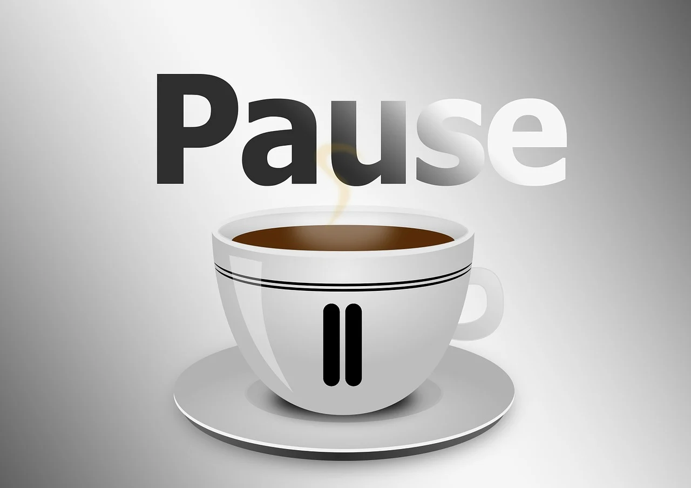

Por que é importante fazer pausas?
Quem fica muito tempo sentado na frente do computador, dirigindo ou costurando, por exemplo, pode terminar o dia com dor nas pernas, nas costas e nos olhos. Isso acontece porque as atividades realizadas exigem foco e concentração, o que desgasta o corpo e a mente, prejudicando a qualidade de vida.
As pausas no trabalho são essenciais para recarregar as baterias. Muitas pessoas, no entanto, acabam deixando as pausas para depois, pois acreditam que isso pode prejudicar o seu rendimento. Porém, é o oposto, quem descansa repõe as energias rapidamente e consegue produzir mais.

Reduz o estresse
O excesso de trabalho e de responsabilidades acaba gerando estresse. Quem atinge um nível de esgotamento muito alto dificilmente consegue se concentrar e dar andamento aos seus projetos.
Já as pausas no trabalho aliviam a tensão e dão um descanso para a mente. Assim, ao voltar para a sua mesa fica mais fácil encontrar soluções e dar um gás no que precisa ser resolvido.
Obs.
Socializar com colegas de trabalho também é importante para aliviar o estresse e ter novas ideias para resolver problemas